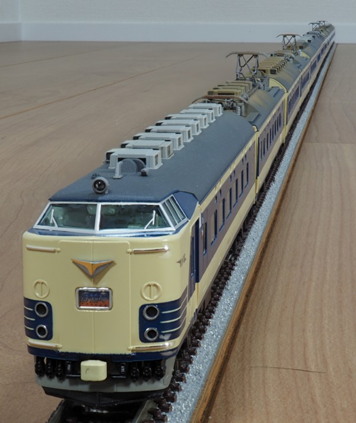
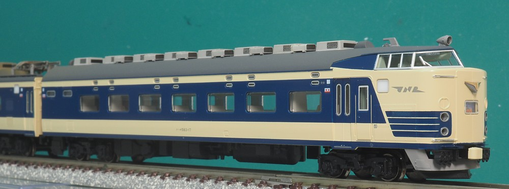
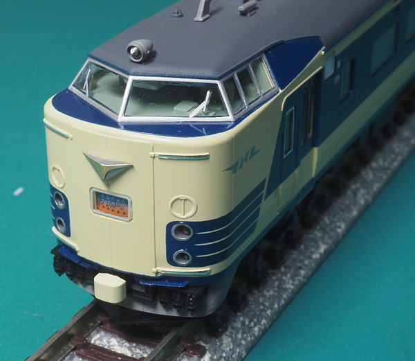
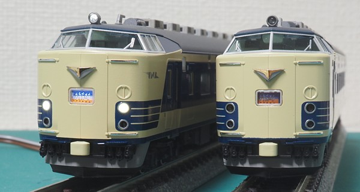
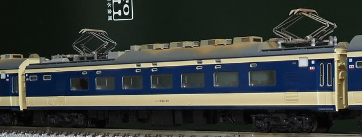
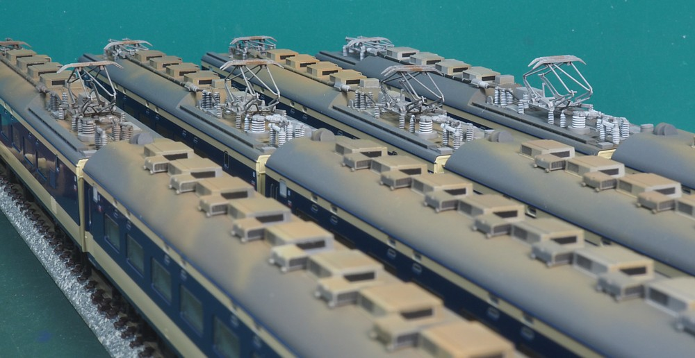
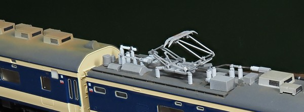
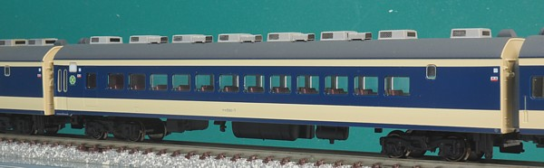
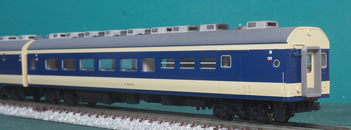
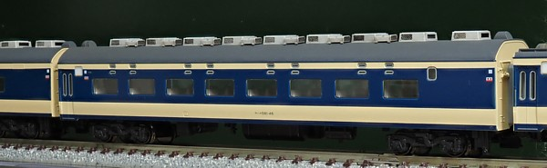

「車両基地の不足を解決する」ために昼も夜も走れるようにするという超作り手視点でつくられた車両ですが、 当時は輸送力=サービスだったのでそんなものだったのでしょう。 関西～九州間、東北本線に投入され特急で使用されましたが、関西～九州間は山陽新幹線の延伸にともないみるみるうちに 活躍の区間そのものが減ってゆき…。 昼行特急と夜行寝台を1つの車両で兼用するというコンセプトから寝台のセット、片づけは複雑で車両基地での実施が前提とされました。 走行中は座席、寝台のいずれかの状態となるためダイヤ設定にも制約がありました。
1980年代になると余剰車も多くなり、目をつけられたのが交直両電源な設備。 なんとドアを増設して近郊型電車に改造。419系、715系として北陸、東北、九州で活躍することになりました。
私は583系として使ったのは「きたぐに」くらいなのですが、419系には北陸で何度も出会いました。 椅子も片づけられた上段寝台もそのままだったので(油断すると引き出して下段にできた気がします…)、 まさに583系な車内でした。

模型はKATOからリニューアル発売されたもの。東北特急の8M5Tな13両編成で導入しました。 クリーム色1号/青15号ともに鮮やかになり編成を組んだ時にきれいです。
屋根が登場時の銀色塗装なのを東北特急風のダークグレーにするために塗装を剥離。 一体成型されたベンチレータを別パーツ化しました。
13両編成全体の編成写真です。 今回は結構派手にモハネの屋根を汚しました。 東北特急の写真を見るとどれもモハネの屋根はサビだらけだったので…。
とはいえ汚れ方は編成・時期によりまちまちなようで、ひたすら583系の屋根の写真を検索ばかりしてました。

クハネ583です。
先に登場して山陽に投入されたクハネ581ではコンプレッサー・電動発電機は静粛性を考慮して 運転室後ろにつくった機器室に床上搭載されました。 東北に投入するにあたりつくられたクハネ583では定員増のためコンプレッサーは運転室下、 電動発電機は床下搭載に戻り機器室分のスペースは客室になりました。
581/583系、中間車は50Hz/60Hz共用のモハネ582/583になったのですが 先頭車については山陽/九州はクハネ581, 東北はクハネ583と使い分けが続きました。
目玉の工作はベンチレーターの別パーツ化です。
ベンチレータを削ってからKATOの50系用のものを取り付け。
取付方法はこちらです。
屋根はダークグレー(自家調色)。クーラー(AU15)とベンチレータはガイアノーツのニュートラルグレーIIIです。
当初、いつもと同じようにねずみ色1号で塗ったのですがなんか雰囲気が違うので今回は薄い色にしました。
クーラーの側面メッシュは塗装後に黒でスミ入れ。
クーラーの妻面のダクトが簡略表現(?)になってるので、クーラーはまず黒で塗装してからマスキングして妻面ダクトを残しています。
ベンチレータも妻面に黒を入れます。
あと、印刷が回ってない窓の側面にはちまちまと青15号を足して回りました。 クリーム色1号はほんの少し見えてるだけなのですが、これが効きます。 特に寝台小窓周りは一気に落ち着いておもちゃ感が消えました。おもちゃですが…。
おもちゃ感といえば無塗装の床下もフラットブラックで塗装しました。 ポリアセタールの地肌がてかってる台車には効果的で、細かいモールドも見えるようになります。

車体に沿ってオフセットがついているジャンパ連結器を一直線に修正し、 更に車体下部にはステップを取り付けています。 ステップはレールクラフト阿波座さんの485系用のものですが583系にぴったり。 (Xで鉄道博物館で583系の取材をしたとかそういえば仰ってました) 上面には網目模様までついてて、エッチングで薄い形状が素敵です。
ベースホワイトで下塗り後に自家調色の青15号を吹いたら発色もよく車体とほぼ同じ色になりました。 更に連結器上部にあるステップも取り付けてます。 こちらは客車用ステップ(最下段)の流用なのですが実物はもっと幅が広く、 落ち着いて探したらもっとよい部品あるのかも…。 1mm強の幅のところにステップを4枚、いずれも取付孔はφ0.3ですから意外と大変です。
運転席上部の雨どいには青15号を入れ、ヘッドライトの周囲には銀を足しました。

先頭車2両を並べました。 レジェンドコレクションの581系もいるのですが、これだけの加工をあちらにもやるのに 腰が上がらず専ら583系が走ってます。
通常品の581系が再生産されたら、初期型と混結にして編成を仕上げに掛かるかもしれません。

モハネ582の1ユニットめ。
屋根さび色とダークグレーの2色を使って汚します。 さび色は調色で、エナメル塗料でフラットアース + 白 + オレンジ です。 塗装後にガイアノーツのつや消しクリアで保護してます。 最初はレッドブラウンをベースにしていたのですがあまりに茶色茶色だったのと 保護でクリアを吹いたらさらに色が暗くなってしまったので色を変えました。
1ユニットめだけ最初の茶色がやや残っちゃってるんですが…仕方なし。

東北本線・常磐線を長距離、ほぼ最高速度で運転する運用のためかパンタグラフから流れるように 汚れが付いていたようです。 特にモハネ583はエアブラシで流すように汚れを表現してみました。
手前→奥の順で作業していってるのですが、2ユニットめ以降は茶色ベースではなく
明るめの色で汚してます。
4ユニットめは汚すのがもったいなくなりかなり薄め。
パンタグラフの間はスペースがないため裸線ではなく高圧ケーブルで接続されており、
こちらも黒とグレーで色入れしています。
また、パンタグラフは碍子を白→フレームを銀で塗装。すり板付近にエナメルでさび色を入れました。
宇都宮の次の停車駅は郡山。黒磯は車上切換で通過になるのですがおそらく郡山までは 2つのパンタを上げっぱなしだったかと思います。 切替が交流側になると連動して引き通し回路の断路器が切れ、手前側のパンタグラフだけが接続された状態になるはず。

モハネ582のパンタグラフ付近拡大。
計器用避雷器・断路器・空気遮断器・交直切替機などの機器は銀色。
碍子は白色です。
配線は銅色に黒を混ぜてサビた感じを出そうとしたのですが、どうでしょうか。

サロです。
屋根の汚れは控えめです。
6号車を想定していますが、東北特急では1979年10月までサロは2号車、以降は6号車と連結位置が変わります。
両方で組み替えて遊ぼうかというよこしまな考えもあり。
絵入りヘッドマークは1978.10からでビミョーなタイミングですね。

サシです。
食堂車の換気扇から出る汚れを表現したのですがやりすぎたかも…。気動車の排気みたいになってます。
1978年頃になると既に夜行では食堂車は営業休止になってますが、
昼間の「はつかり」「みちのく」では健在だったようです。
ビーフステーキ定食とか食堂車で食べてみたかったです。
581/583系の運用は今どきの電車のように編成単位ではなく電動車はユニット単位、付随車は 1両単位でしたので車両基地では入れ換えが発生し、サシには回送運転台が取り付けられていました。 印刷が派手によけている車間ダンパー周りにも青を追加。 自家調色した青15号を筆塗りでやってますが筆塗りの割にはいい感じになってるかと。

全形式ということで、サハネも。
山陽では6M6Tで2両東北の編成では1編成に1両だけ入ります。
581系の編成も欲しくなってきたのですが、市場に既になく…。
人気なようで、中古市場で高く取引されてますね。
次は485系をやるかな。。。